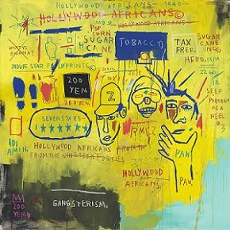

Hollywood Africans
Jean-Michel Basquiat · 1983 · Acrylic and oilstick on canvas · 213.4 × 213.4 cm · Whitney Museum of American Art, New York
In copyright. Look and learn: shown for study, not for download.
Jean-Michel Basquiat painted this in Los Angeles while preparing his March 1983 show at the Gagosian Gallery, working in a studio Larry Gagosian had built below his Venice Beach home. The graffiti artists Toxic and Rammellzee came with him, and the three called themselves the Hollywood Africans. The numbers 12, 22 and 60 near his self-portrait are his birthdate. He was twenty-two.